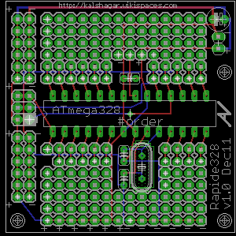
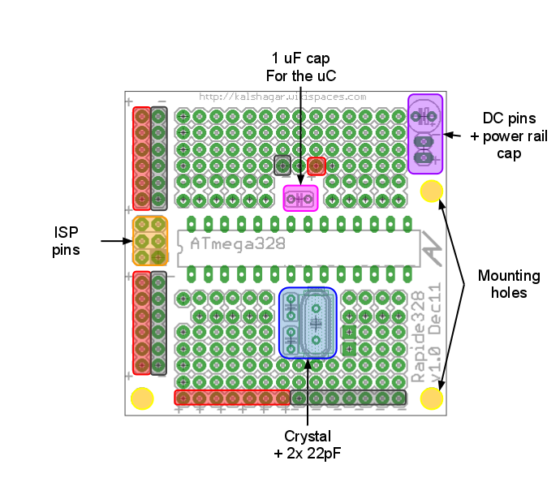
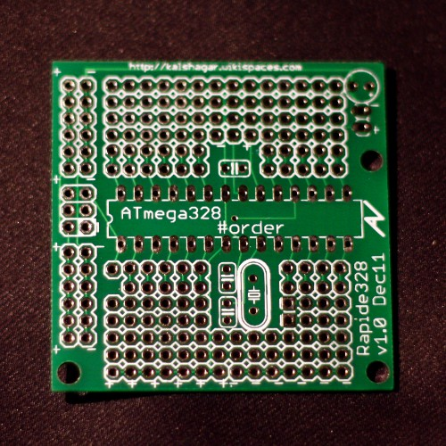

Rapide328 purpose
 If you work like me, this PCB can be quite a time saver. I usually work with Atmega328 chip, the same as Arduino. I make my programs in the ArduinoIDE and compile it. Then I upload the .hex binary file to the card via a pololu ISP on the chip that is sitting in the arduino board (skip the bootloarder) or on the board it resides itself (but then I solder a 6pin ISP and that bores me to death). Most often I keep on putting the chip, moving the chip somewhere, put it back, program, take it out, put on the test board, ... over and over ... not really optimized.
What I wanted was a board that :
- Allows me to program in place having already a ATmega--8 series compliant 6pins ISP
- Allows me to access the chip pin for soldering to surrounding (a bit like a breadboard)
- Allows me to not solder or solder easily those glue components (crystal, crystal caps, ...)
- Has space around the chip to solder the other components
- Has power rails easily accessible
- Has no need for a serial or USB connection
Well, if you agree with most of these points, Rapide328 might be a PCB for you.
In addition to that, it has a feature that is its strength and weakness : it's a 5x5cm board, very small! Good for small projects, less good for medium/large projects, you'll need a daughter board. Or you'll want to see the Rapide328 sister's board, the
Veloce328 who is 5x10cm.
And in case you wonder, yes, "rapide" means "rapid" or "fast", and it's
French like me :P It's a board made to help you make your projects more quickly.
I'm not following the trend of
-uino-suffixing stuffs.
Interrested in having some ?
You can do your own (Eagle code is right under) or mail me (on the left side of the page) I'd be delighted to provide it to you for 200-300 JPY %20 shipping depending where you live and how many you order. Please note that it's just the pcb naked I would send you, without any component.
Schema
All on
google code repository.
Anatomy

- Through hole print for the micro controller Arduino ATmega88/168/328
- Room for a crystal and its 2 caps
- Additional 1uF cap close to the power of the uC
- Power rail all around the circuit
- Empty holes for adding your own components
- 3 mounting holes
Pictures

The real card (first batch, card v1.0)
History
20111207: first batch of 10 pcb ordered to Seeedstudio. v1.0 was a good exercice in Eagle and took maybe 7 hours to be made (in multiple sessions of 1-2h). Now I could make the same in 3h I guess, that's the learning curve.